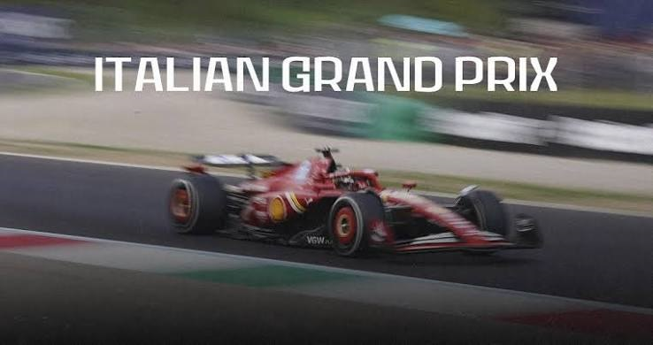
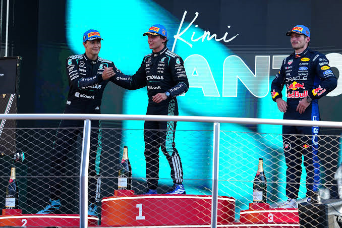

Гран-прі Італії: Неймовірна гонка в Монці

Гран-прі Італії завжди дарує неймовірні емоції, і ця гонка не стала винятком. Автодром Монца знову зібрав десятки тисяч палких уболівальників. Зі старту гонки розгорнулася запекла боротьба: ефект сліпстріму на довгих прямих дозволяв пілотам проводити надзвичайно агресивні обгони перед першою шиканою.

Розв'язка настала на останніх колах, а ключовим фактором стала бездоганна робота з гумою. Справжнім героєм дня став Кімі Антонеллі, який вирвав феноменальну перемогу і піднявся на найвищу сходинку подіуму! Його напарник Джордж Рассел перетнув фінішну лінію другим, забезпечивши розкішний переможний дубль. Замкнув трійку лідерів Макс Ферстаппен, який у напруженій боротьбі завоював третє місце, втримуючи болід на межі можливостей.